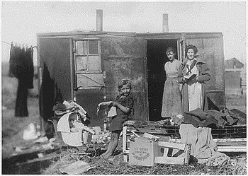
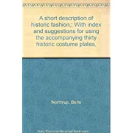
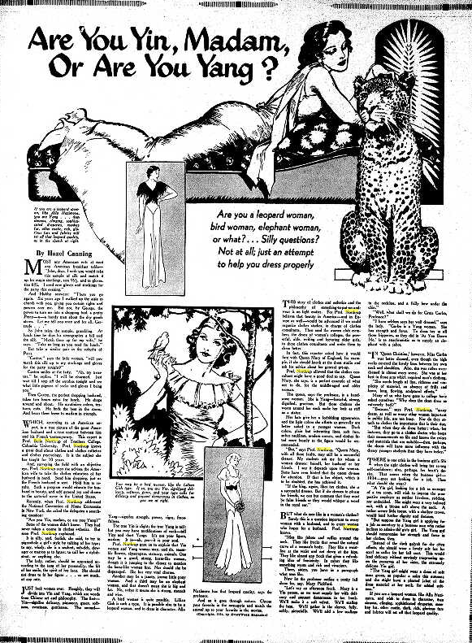
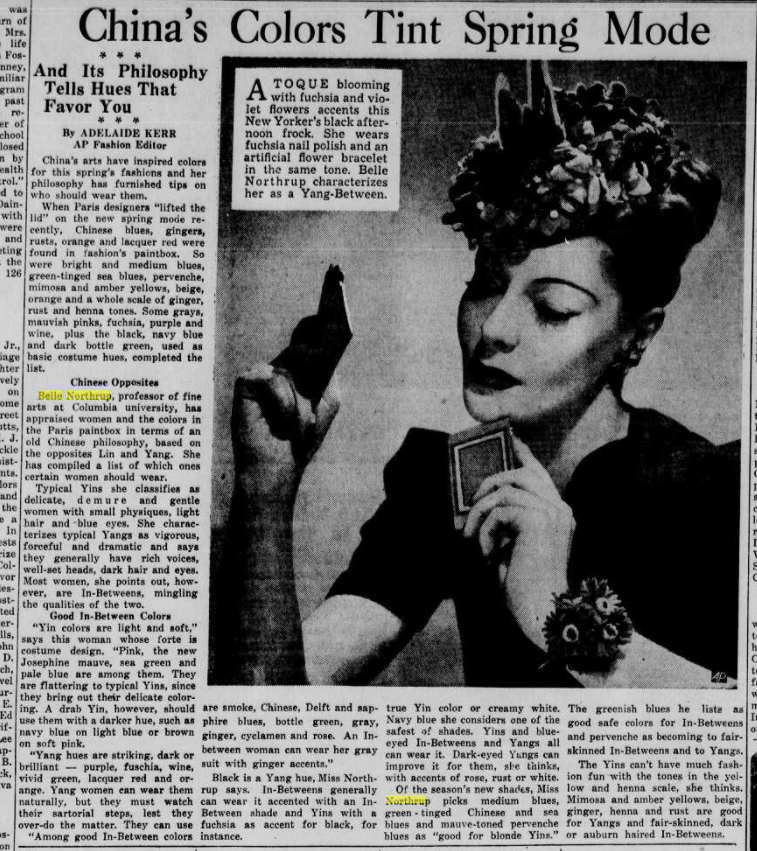
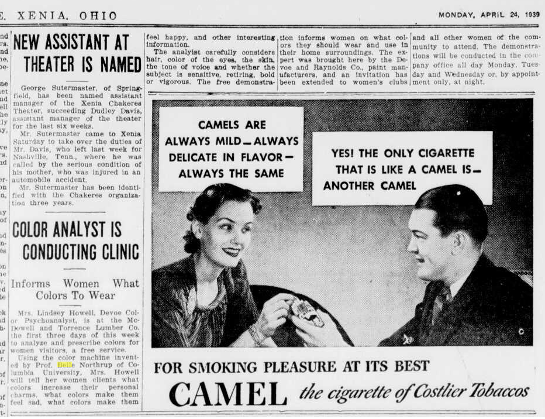
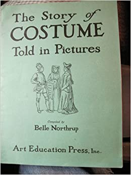

Почему искала истоки теории Инь/Ян?
Изучая теорию Кибби, я часто замечала, что в его системе есть противоречия, непонятки, мало иллюстраций (почему многие толкуют слова Кибби по-своему), не все могут найти себя в этой системе, система не гибкая. Поэтому я не останавливалась только на Кибби и искала все, что связано с Инь/Ян во внешности. Таким образом, я нашла много всего интересного в данном направлении. Существует много систем, авторы которых используют Инь/Ян концепцию; классификация и имя типажей у всех почти совпадают: кто-то переименовывает некоторые типажи, кто-то добавляет новых, а кто-то и выбрасывает ненужных. Но самое главное, что получилось найти первооткрывателя Инь и Ян во внешности. И я считаю, мы должны знать имя этого человека, и это не Дэвид Кибби, а - Бэлл Нортрап! Ознакомившись с теорией Нортрап в оригинале, решила перевести ее для тех, кто интересуется при каких условиях и с чего все началось, какая концепция была вложена. Это очень вдохновляющая теория, иначе бы не было столько последователей. Итак,
Антураж
Без музыки нам не обойтись. Она нужна, чтобы погрузиться в атмосферу того времени, про которое я буду повествовать (привет игрокам Fallout и Bioshock):
Теория о проявлении Инь/Ян во внешнем облике (1934-1936гг.) появилась в период Великой депрессии. Когда мир погрузился в пучину кризиса из-за Биржевого краха в США, больше всех пострадала экономика Канады, Франции, Великобритании, Германии, и особенно досталось США. 30-е годы - это время перед Второй Мировой войной, которая началась в 1939 г. (в России парой годами позже).
В Америке миллионам людей нечего было есть и не на что жить. Богатство не выставлялось на всеобщее обозрение, как это было принято в 20-е годы. В то время банкиры стали настолько непопулярны, что грабители банков становились национальными героями, как Бонни и Клайд (источник).

Несмотря на экономические проблемы, мода не замерла в одной точке и нашла свое развитие благодаря кино. Женщины же хотели выглядеть достойно и красиво всегда, несмотря на бедность (мы не говорим про самое бедное население, которому действительно не на что было жить, а про тех, кто мог себе позволить копировать стиль известных голливудских звезд). “Модными” иконами кинематографа были: Джоан Кроуфорд, Марлен Дитрих, Джинджер Роджерс, Джин Харлоу, Грета Гарбо, Джанет Гейнор.

Кстати, популярными актерами 30х гг. были: Кларк Гейбл, Кэри Грант, Хамфри Богарт, Фрэд Астер.

Знаковым же фильмом того времени стал “Унесенные ветром” (1939 г), культовыми персонажами - Микки Маус и Кинг-Конг.

30-е - это время открытия нейтронов и позитронов, а также изобретения шариковой ручки и таких тканей, как неопрен и нейлон. Эх, нейлоновые чулочки… Надо же и про моду тех лет поговорить кратенько, выделив основные моменты. Итак, стильные “мадамы” Америки носили:
- накладные плечи, кокетки и вставки в виде треугольников, узкие юбки в бедрах расширяющиеся от колен книзу (короче, форма треугольника, присутствующая в силуэте и покрое, широкие плечи и узкие бедра),
- клатчи в виде конвертов или кошелька с рамочкой и защелкой,
- уличный костюм из английского твида,
- головной убор, сумка и обувь - в одной цветовой гамме,
- брюки и брючный костюм Марлен Дитрих,
- солнечные очки
- и женственность, которая пришла на смену популярным в 20х годах простому по
крою платью, укороченному подолу и коротким женским стрижкам:
- мягкие, текучие и качественные ткани (шелк, атлас, хлопок);
- сложный крой, интересная фактура, отделки, воланы, рюши, драпировки, банты;
- обозначенная талия;
- подол сначала удлинился до середины икры, потом - до щиколотки;
- приподнималась и подчеркивалась грудь, вернулись корсеты (только уже не такие тугие, как в прошлом);
- мех песца, лисы или бархатная пелерина;
- высокий каблук, танкетка;
- броши, колье, искусственные цветы из ткани и искусственных камней;
- фантазийные и разнообразные формы головных уборов;
- перчатки не только зимой, но и летом;
- волосы отращивали, красили в блонд, завивали и тщательно укладывали.
Теперь вернемся к истории Инь-Ян теории.
Вы спросите: что я тут все про Америку пишу, потому что Теория Инь/Ян появилась в США. Её автором является Бэлл Нортрап.
К сожалению, очень мало информации о Нортрап в интернете, ничего нет о годах жизни, творческом или жизненном пути. Известно, что она в 1914 закончила Academie Moderne в Париже и в 1917 Колумбийский университет (г.Нью-Йорк, США), была профессором в Педагогическом колледже при Колумбийском университете по дисциплинам: “Дизайн и история костюма” и “Файн-арт” (fine art). Файн-арт - это любой продукт творчества, имеющий целью исключительно эстетическое наслаждение и не предназначенный для утилитарного использования. В декабре 1946 участвовала в Ярмарке мастеров в качестве учителя и консультанта по “искусству современной вышивки”. Еще, пошуршав интернетными страницами в поисках ее публикаций, кое-что обнаружилось на амазоне и в архивах старых газет (много статей). Также была анонсирована книга по Инь и Ян, но ее нигде нет, возможно, свет ее так и не увидел. Итого мы имеем:
- “Краткое описание исторической моды: с указателями и с рекомендациями по использованию сопутствующих 30ти иллюстраций костюмов прошлого” (A short description of historic fashion: With index and suggestions for using the accompanying thirty historic costume plates, 1925), книга - здесь ничего не говориться об Инь и Ян;

- Статьи в архивах газет, одна из известных - “Мадам, вы инь или ян?” (Are You Yin, Madam, Or Are You Yang? 1934) в Laredo Times, а также в 1939 вышло много статей Б.Нортрап: в феврале 1939г - Old Chinese Idea Helps Miss ‘39 Pick Clothes, весной выходили статьи про цвета для девушек Инь и Ян - Color To Fit Your Personality (с фотографией Нортрап), China’s Colors Tint Spring Mode и про цветоанализ - COLOR ANALYST IS CONDUCTING CLINIC (это про сам цветоанализ, как он проходил тогда - драпинг-машин);



- “История костюма, рассказанная в картинках” (The Story of Costume Told in Pictures, 1935), книга - тут тоже ничего про Инь и Ян;

- “Подход к решению проблемы “одежда и личность” (AN APPROACH TO THE PROBLEM OF COSTUME AND PERSONALITY, 1936), статья в журнале по искусству Art Education Today.
Почему именно Инь и Ян?
Хочу я начать с перевода статьи “Подход к решению проблемы “одежда и личность”, где автор поясняет, почему она использует Инь и Ян:
“В прошлом не было адекватных общепринятых стандартов измерения, позволяющих судить о наших общих характеристиках внешнего вида (как нас видят люди вокруг) и как окружающие воспринимают одежду на нас. Вопрос, который редко рассматривался: Как одежда влияет на ее носителя - на его достоинство, утонченность, серьезность, душевные качества… Все аспекты личности и каждая деталь внешнего вида, сотканные в единое целое, должны быть приняты во внимание.
Трудно адекватно описывать качества людей и одежды. В нашем языке нет точных терминов, которые могут выразить это ясно и образно, в сравнение с теми, что мы находим в китайской философии. И поэтому я взяла из китайской философии два описательных слова. Это «Инь» и «Ян». Они будут служить для более точной связки множества значений и характеристик, используемых для критического разбора или оценки. Инь и Ян можно использовать как шкалу, на которой указаны всеобъемлющие противоположности, так и как способ оценки всех бесконечных возможностей костюма и характеристик личности.
Давно еще в Китае почувствовали это четкое разделение сил жизни. За столетия до рождения Христа символы света и тьмы были вырезаны на огромных каменных барабанах Китая и постепенно через века толкование их менялось. Инь, ранее ассоциировавшаяся с миром тьмы, стала означать покой, поглощение, мягкость. Ян был тождественен небесному свету, но превратился в энергию, проникновение, силу. В Инь отражаются такие качества, как нежность, податливость воды, мягкость мха или изящество морозного узора на окнах. Луна - Великая Инь, а также Инь - плодородные долины вдоль русла реки. Ян, наоборот, выражает силу - тяжесть гранита, твердость металла, могущество пламени. Великий Ян - это Солнце, яркое и дарующее жизнь.
С точки зрения культуры Китая существует постоянная игра Инь и Ян во всех вещах, и их легко можно найти во всем, что видит, слышит и думает человек. Западники признают эти универсальные противоположности, но не могут предложить значимых терминов для них, нет слов, которые суммируют качество этих двух великих поляризованных сил”.
Как Ян и Инь проявляется в природе, жизни, во внешности человека и о
представителях чистого Инь и Ян, можно почитать перевод в статьях по тэгу
бэлл-нортрап.